| 日付 | 2008年8月8日（金） - 2008年8月10日（日） | ||||||
|---|---|---|---|---|---|---|---|
| 山域 | 越後 | ||||||
| メンバー | 単独 | ||||||
| 山行形態 | 前夜発2泊3日無人小屋泊 | ||||||
| アクセス | 電車、バス | ||||||
| ルート (Map) |
|
8月頭は例年、天候が安定することが多い。
この最高の時期の3連休、どこに行くかずいぶん迷ったが、越後三山に行くことにする。
越後駒ヶ岳、中ノ岳、八海山どれ一つとっても名の知れた名峰を結ぶ縦走路を歩く。
前日
ムーンライトえちご号に乗って、新潟に向かう。
この夜行列車に乗るのは初めて。ずいぶんレトロな車両だ。
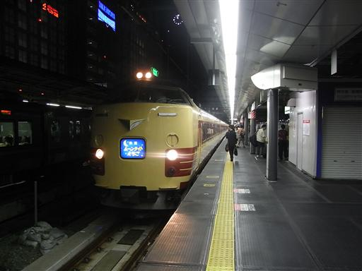
1日目
3:40 長岡駅到着。駅には誰もいない。
始発電車の時間まで待合室で仮眠。
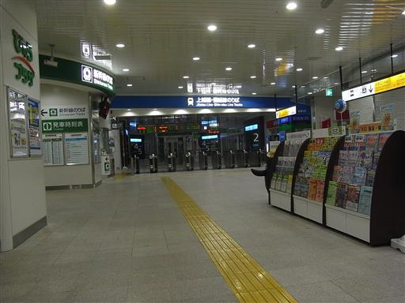
6:23 始発電車に乗って小出駅到着。
ここからバスに乗って枝折峠に向かう。
バスに乗ったのは3名。全員登山者だ。
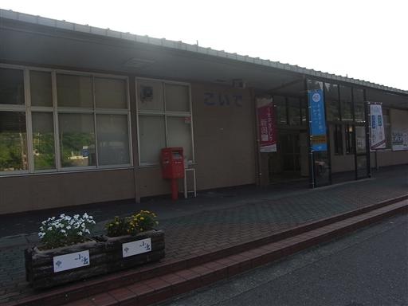
バスからは遠くに越後駒ヶ岳の美しい姿が望める。
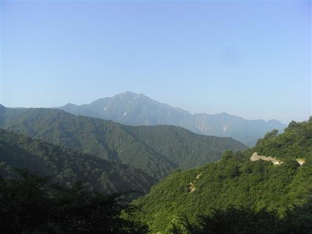
7:30 枝折峠頂上バス停到着。標高1065m。
天気は快晴。
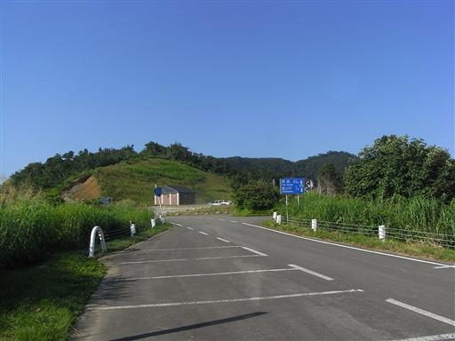
枝折峠からの展望。バスで相当標高を稼いでいる。
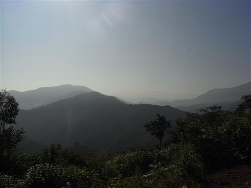
準備をして登山道に入っていく。登山開始直後から遮るもののない直射日光に晒される。
本日の山行のコースタイムは「山と高原地図」によると11時間25分…
そんなに時間がかかっていては日が暮れてしまう。
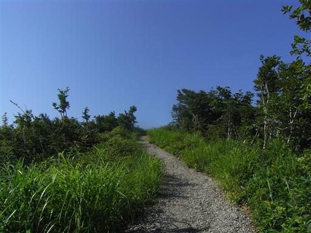
左手には美しい形の荒沢岳が聳えている。
荒沢岳の名は知っていたが、その姿を見て非常に登りたくなってしまった。

目の前には、これまた格好いい越後駒ヶ岳が聳えている。
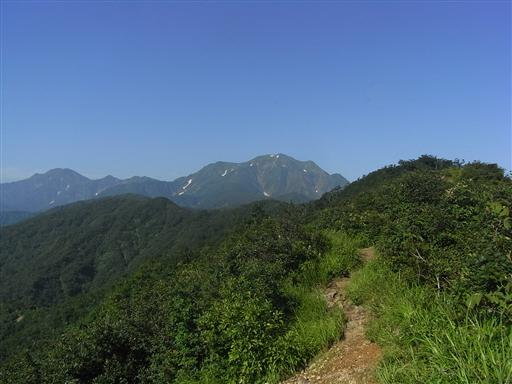
登山道脇に明神堂が建てられている。
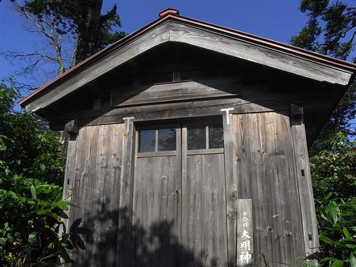
8:40 登山道から少し外れて、道行山に寄り道する。
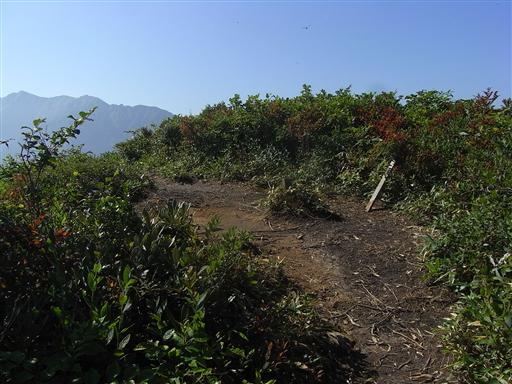
背後には、ここまで歩いてきた起伏のある尾根道が見渡せる。
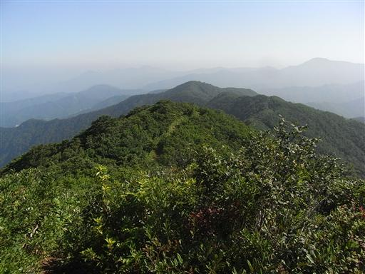
正面には越後駒ヶ岳が大きい。

少し歩くと木陰がでてきて少し涼しくなる。
今日はとにかく暑い。標高が低くても新潟なら涼しいだろうという目算は完全に外れる。
周りを歩く登山者も皆苦しんでいる。
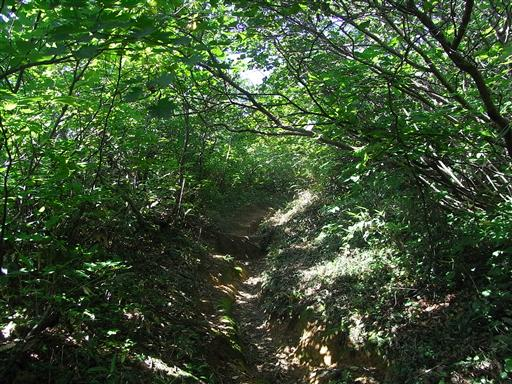
百草ノ池に到着。この辺りに小さな池があるらしいが見当たらなかった。
まだまだ越後駒ヶ岳は高く聳えている。
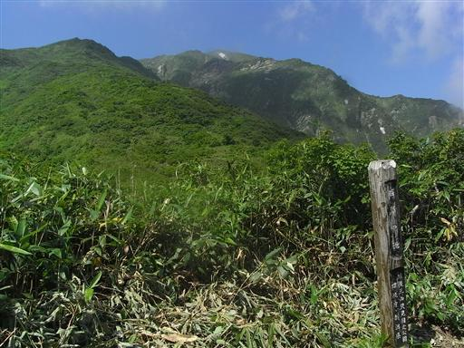
ソバナ。たくさんの花を付けている。
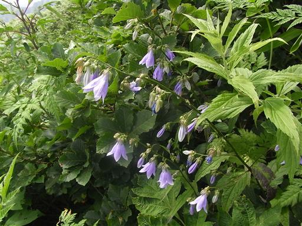
中央に見える丸い山は今日の目的地・中ノ岳。
ここからだと相当に距離がある。
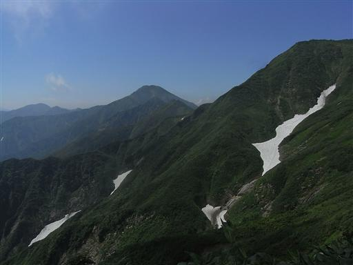
谷を覗くと、はるか下方に雪渓が広がっている。
谷を流れる水の音が尾根上でも良く聞こえている。
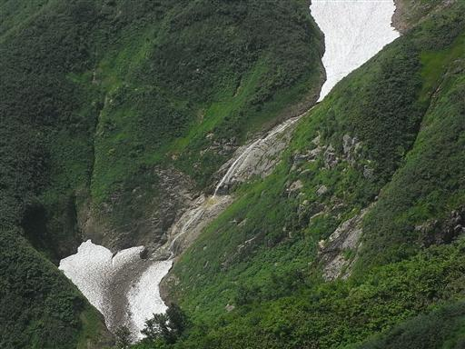
この辺りは豪雪地帯であり、風雪によって削られた岩壁があちこちで見られる。
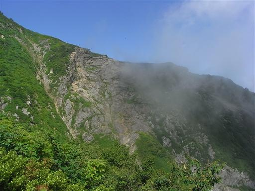
越後駒ヶ岳直下の登りは少し岩場になっている。
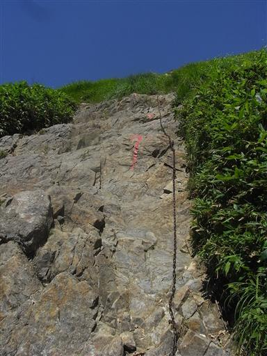
10:44 駒ノ小屋到着。
素泊まりのみなのに有料。
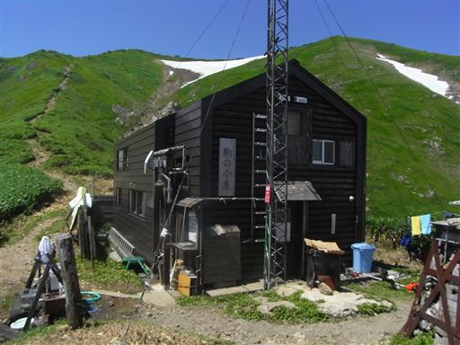
小屋の前には、のんびりくつろげるように(?)板と毛布が用意されている。
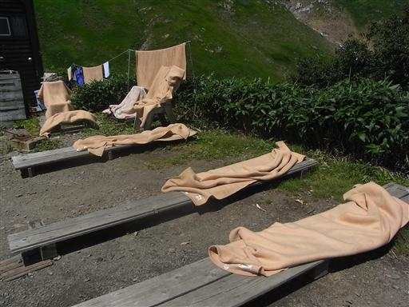
水場では水が止め処なく流れ続けている。
ここの水は冷たくて非常においしい。今日の自炊の分も含めて大量に補給する。
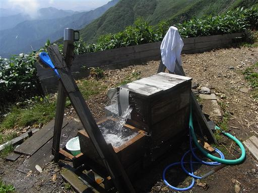
小屋の裏には越後駒ヶ岳のゆったりとした山頂が見えている。
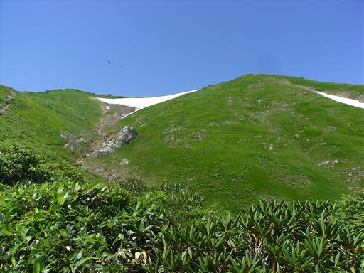
立入禁止の看板。何も工事現場のものを使わなくても…
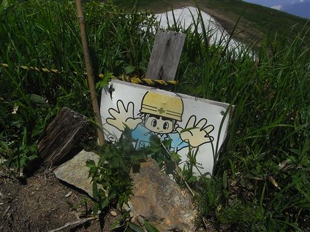
山頂直下には巨大な雪渓が広がっている。
小屋前の水場はここから水を引いているようだ。

11:07 越後駒ヶ岳山頂到着。標高2003m。
山頂は無人。しばらくすると人が登ってきたが、混雑というほどのことはない。
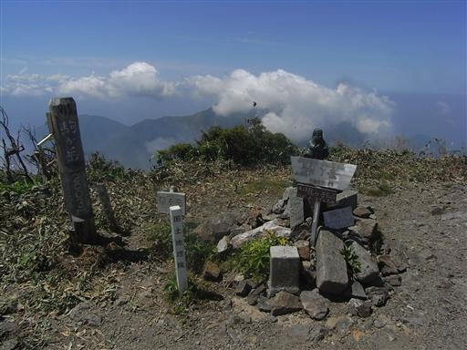
山頂からの展望。晴れていると日本海の向こうに佐渡島も見えるらしいが、
今日は下界が完全に霞の中に隠れてしまっている。
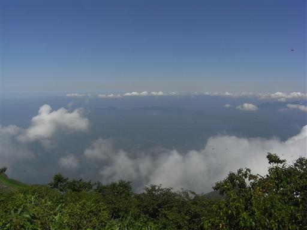
水無川を挟んだ向い側には、雲に覆われて名峰・八海山が聳えている。
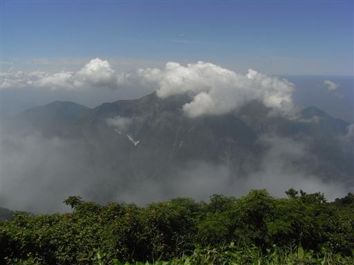
ほとんどの人はここで宿泊、あるいは下山だが、
ここから遥か彼方の中ノ岳まで、まだまだ歩かなくてはならない。
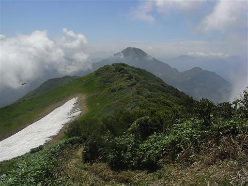
越後駒ヶ岳から中ノ岳の稜線に入ると、途端に道は細くなる。
歩いている人も全くいない。
越後三山は有名だが、コースの厳しさ故、歩く人は少ないようだ。
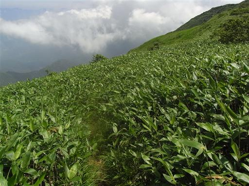
斜面には多くの高山植物が花を咲かせている。
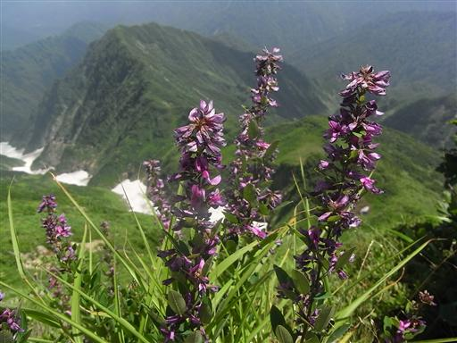
ミヤマコゴメグサ。小さな白い花をたくさん咲かせている。
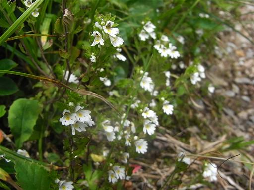
タカネマツムシソウ。複雑な形をした花。
群生せずにポツリポツリと咲いている。
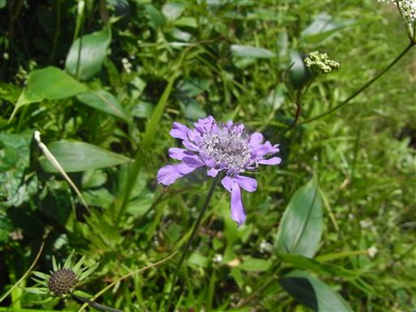
両側の斜面には、幾筋もの谷が落ちていく。
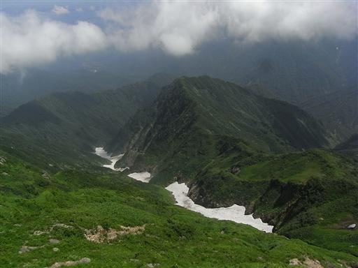
曲がりくねった木の枝が所々登山道を塞いでいる。
木を跨ぎ、乗り越え進んでいく。
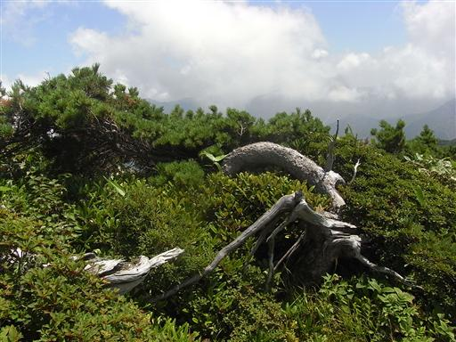
天狗平に到着。このあたりが越後駒ヶ岳と中ノ岳の最低鞍部。
30mほど前を巨大な鹿が大慌てで逃げていった。
両側を崖に囲まれたこのような場所でも鹿は生活しているらしい。
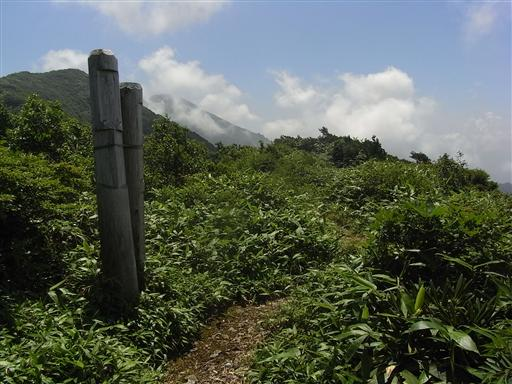
道は両側が切り立ち、ますます険しくなってくる。
越後駒ヶ岳からは全く人と出会わず、人の気配がしない。

気の早い数本の枝だけがきれいに紅葉している。
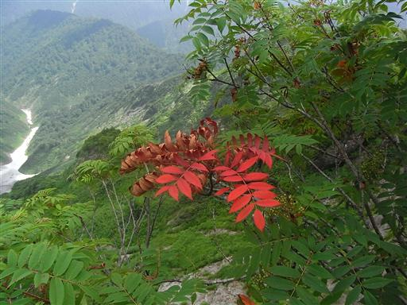
エゾシオガマ。上から見ると手裏剣のような形をした花だ。
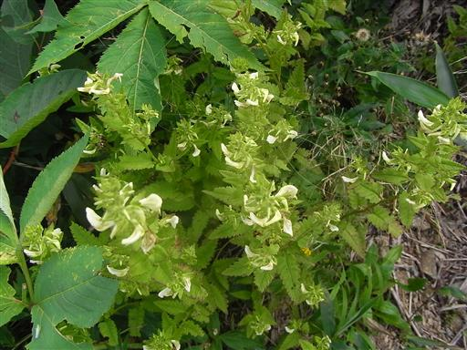
日影などどこを探しても見つからない縦走路。
完全無風。気温も非常に高い。
遠くのほうの景色は暑さのために揺れて見えている。
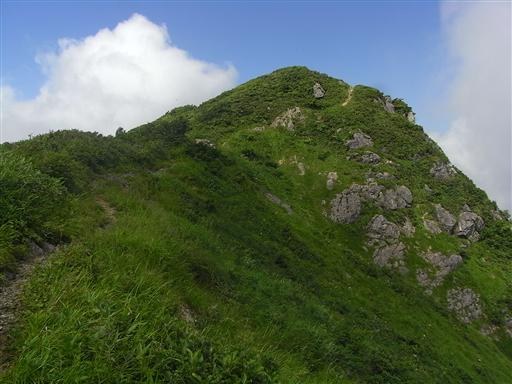
小ピークの上に立つと、目の前に中ノ岳が現れる。
遠い、というより高い…
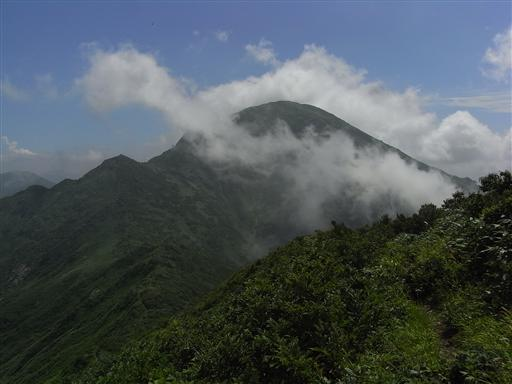
斜面の上の方に小屋の屋根が見えてきた。
最後の斜面を一歩一歩ゆっくり登る。
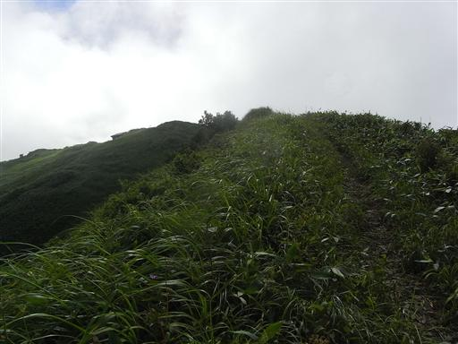
14:17 中ノ岳避難小屋到着。標高2065m。
最後の方はかなり登りがつらかったが、思ったより早く到着できた。

小屋の中の様子。先客が1人いて、今日の宿泊者は2名。
その人は十字峡から丹後山経由で登って来たとのこと。
こちらに負けず劣らずロングコースだ。
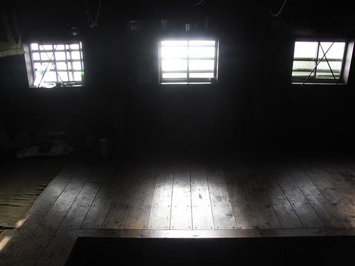
外に出ると、雲がわいてきて、越後駒ヶ岳の頭だけがわずかに見えていた。
昨晩の睡眠不足と、今日の疲れから5時半に就寝。
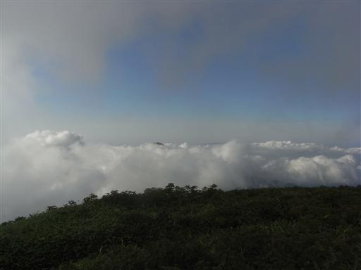